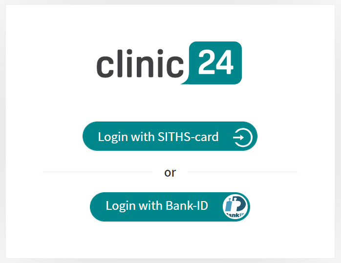
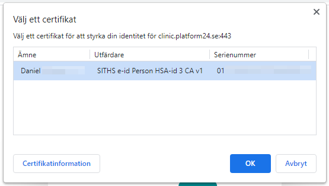
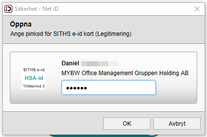
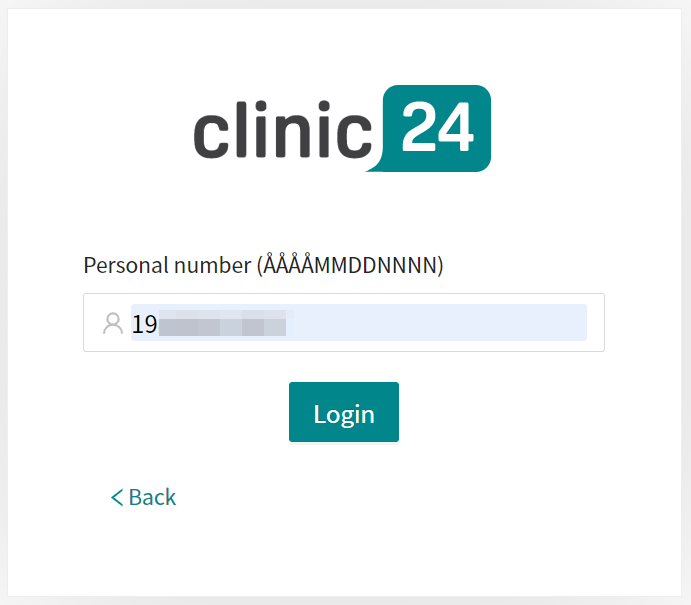
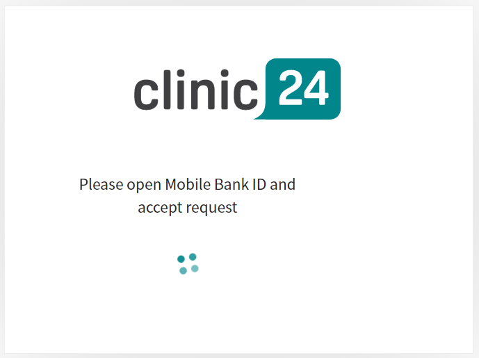
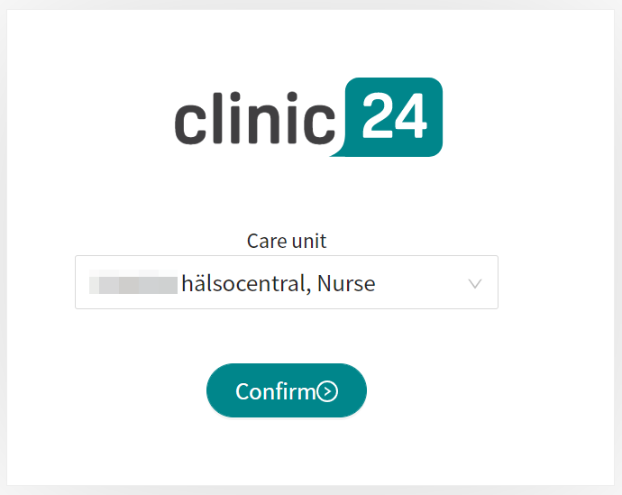
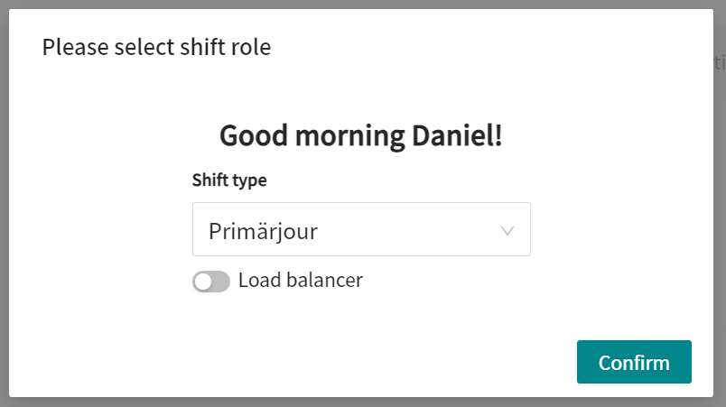

Log in to Clinic24
Open the browser and enter the URLhttps://clinic.platform24.se.
The recommended web browsers are Google Chrome or Microsoft Edge.
Select the appropriate login method:
To log in with a SITHS card (see Step 3 below).
To log in with a mobile BankID (see Step 4 below).
To log in with a SITHS card:
Click Login with SITHS-card.
 Select the certificate that has SITHS e-id Person HSA-id as the issuer and click OK.
 Enter the security code (PIN) for your SITHS card and click OK.

To log in with a mobile BankID:
Click Login with Bank-ID.
Enter your personal number (YYYYMMDDNNNN) and click Sign in.
 Open the BankID application on your mobile device and follow the instructions there.

Choose your care unit and role, for example Testviken hälsocentral, Nurse, in the drop-down list, if it is not already preset, and then click Confirm.
 The very first time you log in to Clinic24, a window will appear where you need to select your Shift type. See the user manual for Clinic24 to read more about the different shift types.
Select the desired Shift type in the drop-down list.
Let the Load balancer be deactivated (the toggle button should be on the left and have a gray background).
Click Confirm.
 Your choice of shift type is saved in Clinic24 and this window will not appear again on the next logins. See the Clinic24 User Manual to read more about how you can change your shift type if necessary.
Caution
Clinic24 lacks support to be used via Citrix VPN. If your computer is connected to the Internet via Citrix VPN, for example to allow you to remotely access your regular medical record system, you need to ensure that you log in and work in Clinic24 in a separate web browser window outside the current Citrix VPN session. Please note that all communication and data in Clinic24 is always handled in a secure and legally compliant manner.
Important
If you have problems logging in to Clinic24, contact your local administrator.